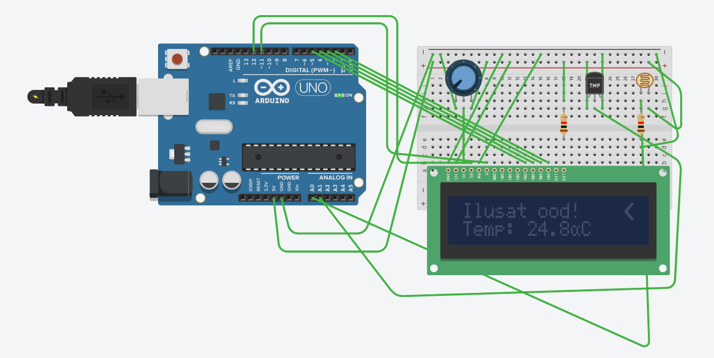

Luua Arduino põhine ilmajaam, mis kasutab LCD-ekraani (16x2), temperatuuriandurit (TMP36) ja fototakistit (LDR). Süsteem loeb iga 5 sekundi järel andurite väärtusi ning kuvab vastavalt valgustasemele ilmaolusid (päikseline, pilvine, vihma oht või öö) koos spetsiaalselt loodud piksel-ikoonidega (päike, pilv, kuusirp, piisk). Lisaks kuvatakse ekraanil reaalne temperatuur. Iga neljanda tsükli järel näitab ilmajaam vahelduseks väikest reklaamipausi või soovitust.
Süsteemi on lisatud ka piesokõlar (buzzer), mis mängib taustaks pidevat meloodiat. Kui temperatuur tõuseb üle 40°C, asendub taustamuusika automaatselt alarmsireeniga. Heli juhtimiseks kasutatakse millis() funktsiooni, mis tagab ekraani sujuva uuenemise ilma programmi peatamata.

#include <LiquidCrystal.h>
// Display connection: RS, E, D4, D5, D6, D7
LiquidCrystal lcd(12, 11, 5, 4, 3, 2);
const int tempPin = A1;
const int ldrPin = A0;
const int buzzerPin = 8; // Pin for connecting the buzzer
unsigned long previousMillis = 0;
const long interval = 5000; // Update every 5 seconds
int cycleCounter = 0; // Counter for displaying the ad message
// --- Global variables ---
float currentTemperature = 20.0; // Stores current temperature for the buzzer
// --- Buzzer variables (non-blocking) ---
unsigned long previousBuzzerMillis = 0;
int noteIndex = 0;
bool alarmState = false;
// Simple background melody (Notes: C4, E4, G4, C5)
const int melody[] = {262, 330, 392, 523};
const int melodySpeed = 500; // Note switching speed (ms)
// Alarm settings
const int alarmSpeed = 200; // Siren blink speed (ms)
// 1. Sun
byte sun[8] = {
0b00100, 0b10101, 0b01110, 0b11111, 0b01110, 0b10101, 0b00100, 0b00000
};
// 2. Cloud
byte cloud[8] = {
0b00000, 0b01100, 0b10110, 0b11111, 0b11111, 0b01110, 0b00000, 0b00000
};
// 3. Moon
byte moon[8] = {
0b00011, 0b00110, 0b01100, 0b11000, 0b11000, 0b01100, 0b00110, 0b00011
};
// 4. Drop (for cloudy/rainy weather)
byte drop[8] = {
0b00100, 0b00100, 0b01010, 0b01010, 0b10001, 0b10001, 0b01110, 0b00000
};
// 5. Smiley (for the ad message)
byte smiley[8] = {
0b00000, 0b01010, 0b01010, 0b00000, 0b10001, 0b01110, 0b00000, 0b00000
};
void setup() {
lcd.begin(16, 2);
pinMode(buzzerPin, OUTPUT);
// Initialize custom characters (from 0 to 4)
lcd.createChar(0, sun);
lcd.createChar(1, cloud);
lcd.createChar(2, moon);
lcd.createChar(3, drop);
lcd.createChar(4, smiley);
Serial.begin(9600);
// Initial temperature read so the sound matches reality immediately
int tempRaw = analogRead(tempPin);
currentTemperature = (tempRaw * (5.0 / 1023.0) - 0.5) * 100.0;
// Requirement: Weather station name at startup
lcd.setCursor(0, 0);
lcd.print("Ilmajaam: METEO");
lcd.setCursor(0, 1);
lcd.print("Laen andmeid...");
delay(3000);
lcd.clear();
}
void loop() {
unsigned long currentMillis = millis();
// --- 1. Screen update logic (every 5 seconds) ---
if (currentMillis - previousMillis >= interval) {
previousMillis = currentMillis;
cycleCounter++; // Increment cycle counter
// Read temperature
int tempRaw = analogRead(tempPin);
float voltage = tempRaw * (5.0 / 1023.0);
currentTemperature = (voltage - 0.5) * 100.0; // Save to global variable
// Read light level
int ldrValue = analogRead(ldrPin);
// Output to serial monitor for debugging
Serial.print("Temp: ");
Serial.print(currentTemperature);
Serial.print(" C | Valgus: ");
Serial.println(ldrValue);
lcd.clear();
// Display logic: show joke/ad every 4th cycle
if (cycleCounter % 4 == 0) {
// Situation 5: Ad text + smiley icon
lcd.setCursor(0, 0);
lcd.print("Joo sooja teed!");
lcd.setCursor(15, 0);
lcd.write(byte(4));
lcd.setCursor(0, 1);
lcd.print("Reklaamipaus :)");
} else {
// Normal weather mode
lcd.setCursor(0, 0);
// Situations 1-4: Depend on light sensor (LDR)
if (ldrValue > 935) {
lcd.print("Paikseline ilm");
lcd.setCursor(15, 0);
lcd.write(byte(0)); // Sun
} else if (ldrValue > 800) {
lcd.print("Pilvine ilm");
lcd.setCursor(15, 0);
lcd.write(byte(1)); // Cloud
} else if (ldrValue > 500) {
lcd.print("Vihma oht!");
lcd.setCursor(15, 0);
lcd.write(byte(3)); // Drop
} else {
lcd.print("Ilusat ood!");
lcd.setCursor(15, 0);
lcd.write(byte(2)); // Moon
}
// Display temperature
lcd.setCursor(0, 1);
lcd.print("Temp: ");
lcd.print(currentTemperature, 1); // 1 decimal place
lcd.print((char)223); // Degree symbol
lcd.print("C");
}
}
// --- 2. Buzzer logic (runs continuously in the background) ---
if (currentTemperature > 40.0) {
// ALARM mode: alternating high and low frequency
if (currentMillis - previousBuzzerMillis >= alarmSpeed) {
previousBuzzerMillis = currentMillis;
alarmState = !alarmState;
if (alarmState) {
tone(buzzerPin, 2000); // Piercing high sound
} else {
tone(buzzerPin, 1000); // Lower siren sound
}
}
} else {
// MELODY mode: calm background music
if (currentMillis - previousBuzzerMillis >= melodySpeed) {
previousBuzzerMillis = currentMillis;
tone(buzzerPin, melody[noteIndex]);
noteIndex = (noteIndex + 1) % 4; // Cycle through the 4 notes in the array
}
}
}